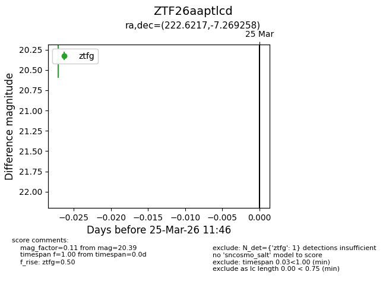
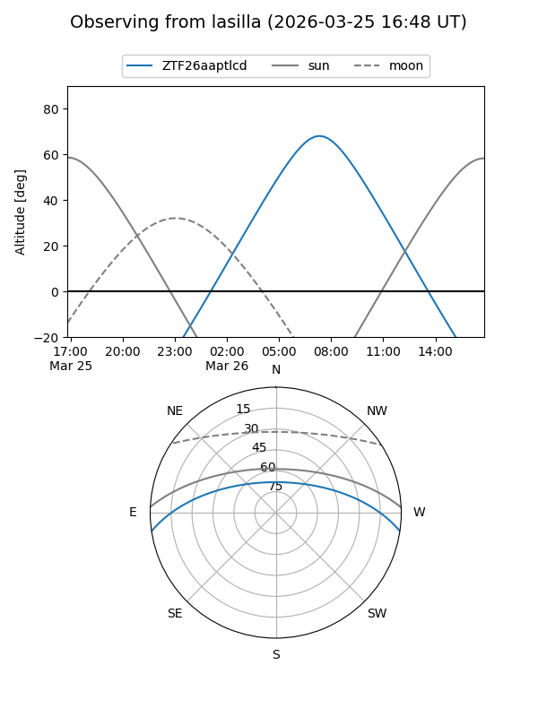
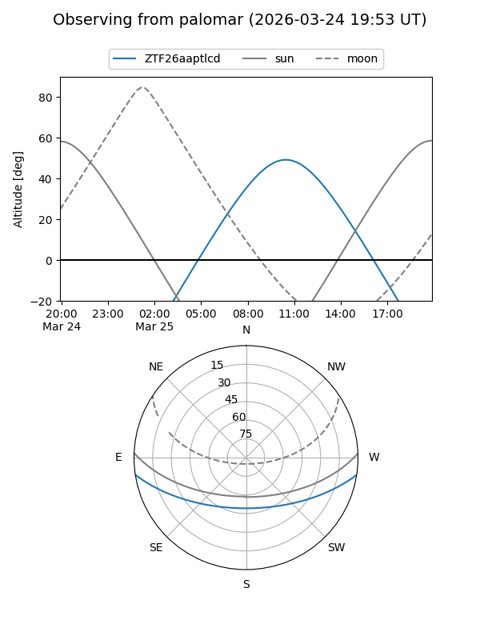

ZTF26aaptlcd
Target ZTF26aaptlcd at 2026-03-25 11:49
Aliases and brokers:
FINK: link
Lasair: link
ALeRCE: link
alt names
ZTF26aaptlcd (ztf,fink_ztf)
Coordinates:
equatorial (ra, dec) = 222.6217,-7.26926
equatorial (HMS+DMS) = 14:50:29.20,-07:16:09.33
galactic (l, b) = (347.1937,+45.12812)
Flags:
Photometry:
last ztfg=20.39
1 ztfg detections
Lightcurve

Visibility


Additional plots